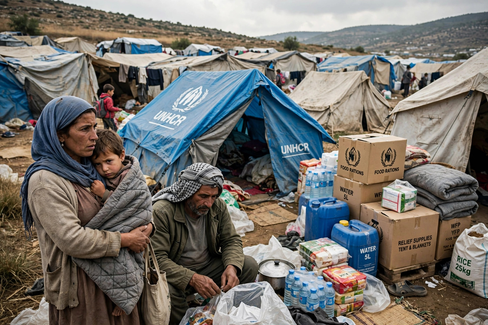

Guiding Principles on Internal Displacement
| Guiding Principles on Internal Displacement | |
|---|---|
| Presented | 1998, to the UN Commission on Human Rights |
| Developed under | Francis Deng, Representative of the Secretary-General on Internally Displaced Persons |
| Structure | 30 principles covering all phases of displacement |

The Guiding Principles on Internal Displacement are a set of thirty principles, presented to the United Nations Commission on Human Rights in 1998, that set out the rights of internally displaced persons (IDPs) and the obligations of governments and other actors toward them. Although not a binding treaty, the Principles restate and compile binding norms of international human rights and humanitarian law, and they have been widely incorporated into national laws and policies and recognised by the UN General Assembly as an important international framework for the protection of the displaced.
Content
The Principles define IDPs as persons forced or obliged to flee their homes — in particular as a result of armed conflict, generalised violence, human rights violations, or disasters — who have not crossed an internationally recognised state border. They are organised in five sections: general principles (including non-discrimination and the primary responsibility of national authorities); protection from displacement (prohibiting arbitrary displacement, such as in cases of population transfer); protection during displacement (life, dignity, liberty, and standards of living, including protection against forcible return to danger, echoing non-refoulement); humanitarian assistance; and durable solutions — return, local integration, or resettlement — together with recovery of property and possessions or compensation.
Development and influence
The Principles were developed under Francis Deng, the Sudanese diplomat appointed in 1992 as Representative of the Secretary-General on Internally Displaced Persons, whose mandate rested on the notion of "sovereignty as responsibility": where a state cannot or will not protect its displaced citizens, the international community acquires a legitimate role. The African Union's 2009 Kampala Convention converted much of this framework into the first binding regional treaty on internal displacement. Global IDP numbers — driven by conflicts in Syria, Sudan, Ukraine, and elsewhere — reached record levels, exceeding 75 million by the mid-2020s according to the Internal Displacement Monitoring Centre, making forced displacement within borders numerically larger than cross-border refugee flows.
See also
Forced displacement · Political asylum · Population transfer · Non-refoulement
Categories: Internally displaced persons · Human rights instruments · 1998 documents